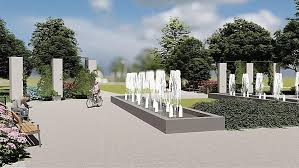
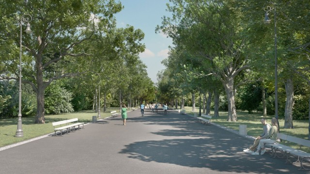

Na pierwszym, około 400-metrowym odcinku (od ul. Braci Mieroszewskich do nowego ronda) pojawi się nowa nawierzchnia, a także pas zieleni oddzielający obie jezdnie, co ma poprawić bezpieczeństwo. Zmiany czekają też kierowców na skrzyżowaniu Blachnickiego, Bohaterów Monte Cassino i Kisielewskiego – zlikwidowane zostaną możliwości skrętu w lewo w obu kierunkach.

Zatoka przystanku Zagórze Osiedle zostanie wykonana w betonie, a tradycyjne krawężniki zastąpią tzw. krawężniki wiedeńskie, ułatwiające wsiadanie pasażerom. Przejścia dla pieszych w tym rejonie zostaną dodatkowo doświetlone.
Po stronie Zagłębiowskiego Parku Sportowego powstanie nowa droga rowerowa i chodnik, które połączą Zagórze z ul. 3 Maja. Drugi chodnik zostanie wykonany po przeciwnej stronie ulicy, a przy okazji prac zostanie też naprawione osuwisko skarpy.
Nową nawierzchnię zyska cała długość alei Blachnickiego, a w rejonie wiaduktu nad ul. 3 Maja pojawi się wzbudzana sygnalizacja świetlna i doświetlone przejście dla pieszych. Tu również jezdnie zostaną rozdzielone pasem zieleni.